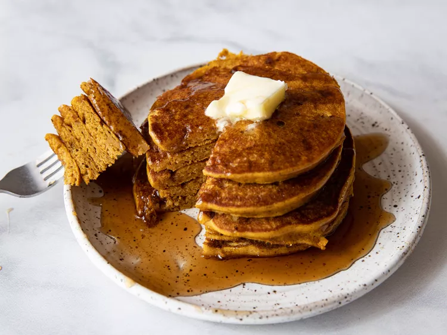

Pumpkin Pancakes

Description
Pumpkin pancakes are good in any season, but are a perfect way to warm up
on cold mornings. Either canned or fresh cooked pumpkin works with this
recipe.
Ingredients
- 1 1/2 c. milk
- 1 c. pumpkin puree
- 1 large egg
- 2 tbs. vegetable oil
- 2 tbs. vinegar
- 2 c. all-purpouse flour
- 3 tbs. brown sugar
- 2 tsp. baking powder
- 2 tsp. baking soda
- 1 tsp. ground allspice
- 1 tsp. ground cinnamon
- 1/2 tsp. ground ginger
- 1/2 tsp. salt
-
Optional:
- Add chocolate chips
- Add chopped walnuts or pecans
- Add vanilla to batter for warmth
-
Use pumpkin pie spice in place of allspice, cinnamon, and ginger
Steps
-
In a large bowl, stir milk, pumpkin, egg, oil, and vinegar together
until well combined.
-
In a separate bowl, whisk flour, brown sugar, baking powder, baking
soda, and seasonings.
- Add dry ingredients to pumpkin mixture, and mix just to combined.
-
With a sprayed frying pan over medium-high heat, repeat until all batter
is used:
-
Pour 3-4 tbs. batter for each pancake onto pan, and flatten slightly
with spoon.
- Cook ~2 minutes until small bubbles appear.
- Flip and cook another ~2 minutes until golden brown.
- Plate up with any desired toppings and serve.